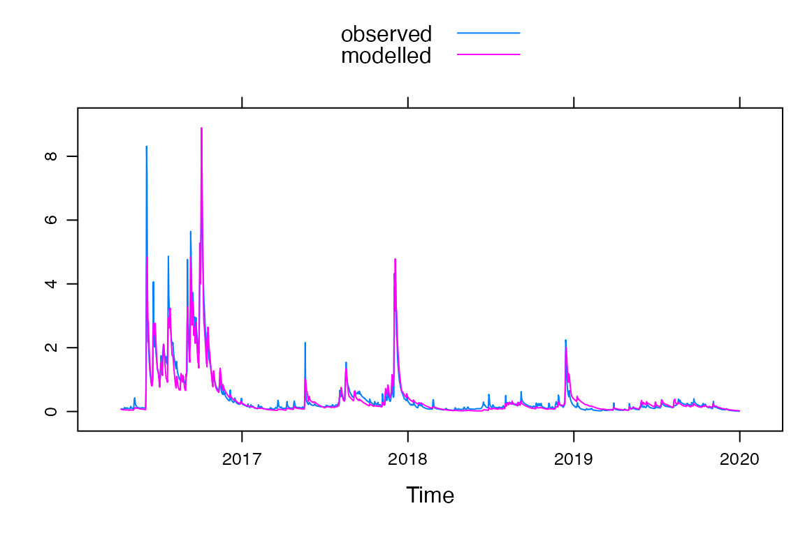

The HBV model included in hydromad implements the basic structure of the HBV-light by Seibert and Vis (2012). This tutorial will demonstrate how to use the hydromad HBV model and compare the output to the HBV-light model (v4.0.0.20, obtained from https://www.geo.uzh.ch/en/units/h2k/Services/HBV-Model.html).
Most of the required data for the model are similar to standard hydromad:
If daily estimates of potential evapotranspiration are not available for your catchment, then they can be calculated using the HBV method (see equation 7 Seibert and Vis, 2012).
A vector of length 12 or 365 of mean temperature can also be provided for use in calculating PET. If it is not provided then mean monthly temperature is calculated from the timeseries of temperature. A demonstration of using the HBV PET method is provided later.
The structure of the model in hydromad replicates the HBV-light standard version using UZL and K0 in SUZ-box.
tt Threshold temperature for snow and snow melt in degrees Celsius.cfmax Degree-day factor for snow melt (mm/(ºC.day)).sfcf Snowfall correction factor. Amount of precipitation below threshold temperature that should be rainfall instead of snow.cfr Refreezing coefficient for water in the snowpack.cwh Liquid water holding capacity of the snowpack.fc Maximum amount of soil moisture storage (mm).lp Threshold for reduction of evaporation. Limit for potential evapotranspiration.beta Shape coefficient in soil routine.cet Potential ET correction factor. Not required if PET is provided for all timestepsIn addition there is an optional flag initialise_sm to set the soil moisture store to equal fc*lp at the first timestep to match HBV-light behaviour. The default is false to match other hydromad models.
perc Maximum percolation from upper to lower groundwater storage.uzl Threshold for quick runoff for k0 outflow (mm).k0 Recession coefficient (quick runoff).k1 Recession coefficient (upper groundwater storage).k2 Recession coefficient (lower groundwater storage).maxbas Routing, length of triangular weighting function (days).An additional model setting initial_slz can be used to set the initial value for the lower groundwater store (SLZ). This appears to equal the first streamflow timestep value divided by the k2 parameter in HBV-light but can be set to any value.
The following state variables can be returned from the model:
sma="hbv") module
Snow snow depth (mm)SM soil moisture (mm)PET potential evapotranspiration (mm)AET actual evapotranspiration (mm)U effective precipitation, or recharge, that goes to the routing modulerouting="hbvrouting") module
SUZ upper groundwater storage (mm)SLZ lower groundwater storage (mm)Q0 quick runoff (mm)Q1 runoff from the upper groundwater store (mm)Q2 runoff from the lower groundwater store (mm)X routed streamflow (mm)This example uses the example dataset from the Corin Catchment, ACT, Australia which is included with hydromad. This dataset is a zoo object that contains daily estimates of all the required variables.
## P Q E T
## 2016-01-01 0.00 0.1152 7.87 21.4
## 2016-01-02 0.00 0.1170 4.50 17.9
## 2016-01-03 3.90 0.1264 3.97 16.1
## 2016-01-04 6.33 0.1799 2.64 13.7
## 2016-01-05 9.48 0.3879 2.41 13.7
## 2016-01-06 0.00 0.3033 3.37 14.3Set up and fit model. If the parameters or parameter ranges are not specified then the default ranges for hbv and hbvrouting are used. These can be viewed using hbv.ranges() and hbvrouting.ranges().
mod <- hydromad(DATA = Corin,
sma = "hbv",
routing = "hbvrouting")
# Calibrate the default parameter ranges
fit <- fitByOptim(mod, method = "PORT")A summary of the model fit and plot of the simulated and modelled streamflow series can be obtained as follows.
summary(fit)##
## Call:
## hydromad(DATA = Corin, sma = "hbv", routing = "hbvrouting", perc = 0.798432,
## uzl = 15.4616, k0 = 0.100156, k1 = 0.125015, k2 = 0.040413,
## maxbas = 1.50607, tt = 0.328283, cfmax = 2.27273, sfcf = 0.430303,
## cfr = 0.0191919, cwh = 0.187879, fc = 312.218, lp = 0.898577,
## beta = 2.69746)
##
## Time steps: 1361 (0 missing).
## Runoff ratio (Q/P): (0.4495 / 2.315) = 0.1942
## rel bias: -0.02689
## r squared: 0.9157
## r sq sqrt: 0.9157
## r sq log: 0.8606
##
## For definitions see ?hydromad.stats
xyplot(fit)
To calculate PET using the method (Seibert and Vis, 2012; equation 7), a list with named objects "PET" and "Tmean" need to be supplied to the PET argument when setting up the model. In addition, the cet parameter needs to be provided. Either a single value or a range can be provided if cet is to be calibrated.
Here are some comparisons to output of the HBV-light model to ensure that correct model structures have been implemented. Comparisons are made using the Corin catchment dataset and the HBV-land dataset that comes with the HBV-light model. No warmup periods are used here to show the models produce the same results, but typically warm up periods range from 100 days (hydromad default) to a year.
mod <- hydromad(DATA = Corin,
sma = "hbv",
routing = "hbvrouting",
tt = 0, # Snow
cfmax = 6.36,
sfcf = 1,
cfr = 0.05,
cwh = 0.19,
fc = 317, # Soil
lp = 0.89,
beta = 2.68,
perc = 0.89, # Routing
uzl = 71.34,
k0 = 0.11,
k1 = 0.15,
k2 = 0.04,
maxbas = 1.5,
return_state = TRUE,
return_components = TRUE,
initialise_sm = TRUE,
initial_slz = Corin$Q[1] / 0.04, # first Q timestep / k2
warmup = 0)The models produce the same results:
ggplot(df, aes(Date, value, col=Model)) +
geom_line(alpha=0.5) +
ylab("Value (mm)") +
facet_wrap(~name, scales="free_y", ncol = 3)Only small rounding differences exist.
ggplot(df2, aes(Date, diff,1)) +
geom_line() +
ylab("Value (mm)") +
facet_wrap(~name, ncol = 3)
mod <- hydromad(DATA = hbv_land,
sma = "hbv",
routing = "hbvrouting",
tt = -1.76, # Snow
cfmax = 2.98,
sfcf = 0.73,
cfr = 0.05,
cwh = 0.1,
fc = 285, # Soil
lp = 0.75,
beta = 3.43,
cet = 0.1,
perc = 1.02, # Routing
uzl = 17.6,
k0 = 0.25,
k1 = 0.09,
k2 = 0.06,
maxbas = 2.4,
return_state = TRUE,
return_components = TRUE,
initialise_sm = TRUE,
initial_slz = hbv_land$Q[1] / 0.06, # first Q timestep / k2
warmup = 0,
PET = list("PET"=hbv_land_pet, "Tmean" = hbv_land_tmean))
ggplot(df, aes(Date, value, col=Model)) +
geom_line(alpha=0.5) +
ylab("Value (mm)") +
facet_wrap(~name, scales="free_y", ncol = 3)Again there are only small rounding differences.
ggplot(df2, aes(Date, diff,1)) +
geom_line() +
ylab("Value (mm)") +
facet_wrap(~name, ncol = 3)If you use the hydromad HBV model, you should cite the paper by Seibert and Vis, 2012 as well as the hydromad package.
For additional HBV references, see: